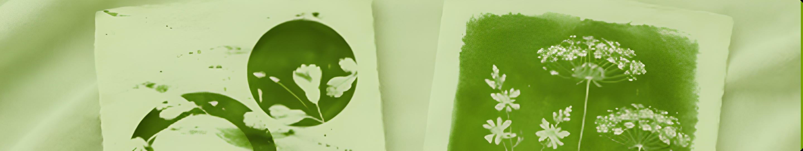
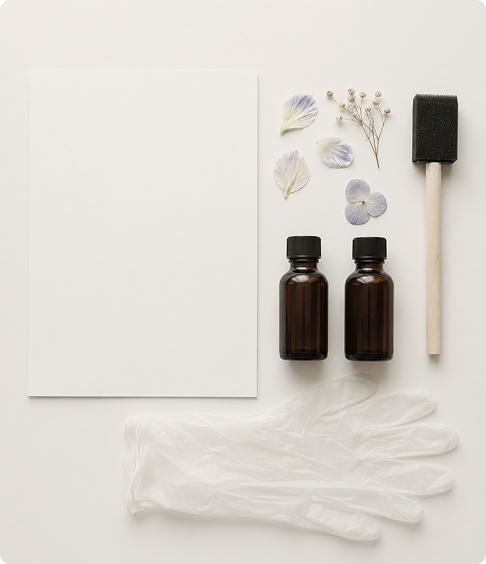

Цианотипия — это способ создавать изображения с помощью солнечного света. Процесс напоминает магию: вы наносите на бумагу специальный раствор, раскладываете листья или негативы, выставляете на свет — и получаете отпечаток глубокого синего оттенка. Никакой сложной техники, только ваше внимание, немного терпения и солнце за окном.
2 ч
до 300 ₽
легко
Вдали от прямого солнца смешайте в равных частях феррицитрат аммония и феррицианид калия (наденьте перчатки). Храните готовую смесь в тёмном флаконе. Затемните помещение или выберите угол с задернутыми шторами — ультрафиолет запускает реакцию сразу.
Кистью или губкой равномерно покройте плотную акварельную бумагу, избегая луж и подтёков. Оставьте лист в темноте до полного высыхания — поверхность станет матовой (20–40 минут).
На высохший лист выложите засушенные растения, кружево, вырезанные силуэты или плёночный негатив. Накройте стеклом и плотно прижмите зажимами, чтобы детали не сместились и свет не попал в зазоры.
Вынесите работу под прямые лучи. Летом хватит 5–15 минут, зимой или в облачность — до 30–40. Ориентируйтесь по цвету эмульсии: из желтовато-зелёной она станет бронзово‑серой.
Опустите лист в холодную воду, меняйте её, пока она не станет прозрачной. Скрытые участки станут белыми, а засвеченные — насыщенно-синими. Для глубины оттенка добавьте несколько капель перекиси водорода. Высушите на ровной поверхности вдали от батарей — цвет со временем проявится ещё ярче.

Создайте свой первый шедевр с помощью профессионального подхода мастера